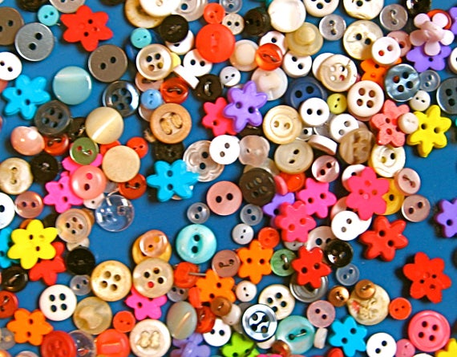
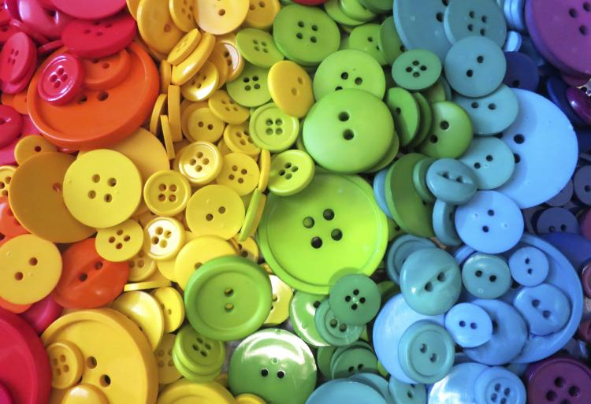
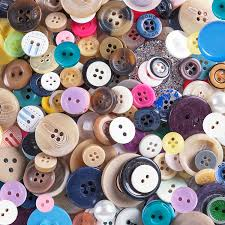
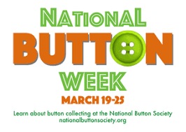

My favourite hobby is
To collect buttons!
I like to collect buttons.
About
One should have a hobby. Hobbies are a great way to spend your leisure time.
My Inspiration
The NBS Society is my inspiration.
Click on the images to view my inspiration.
